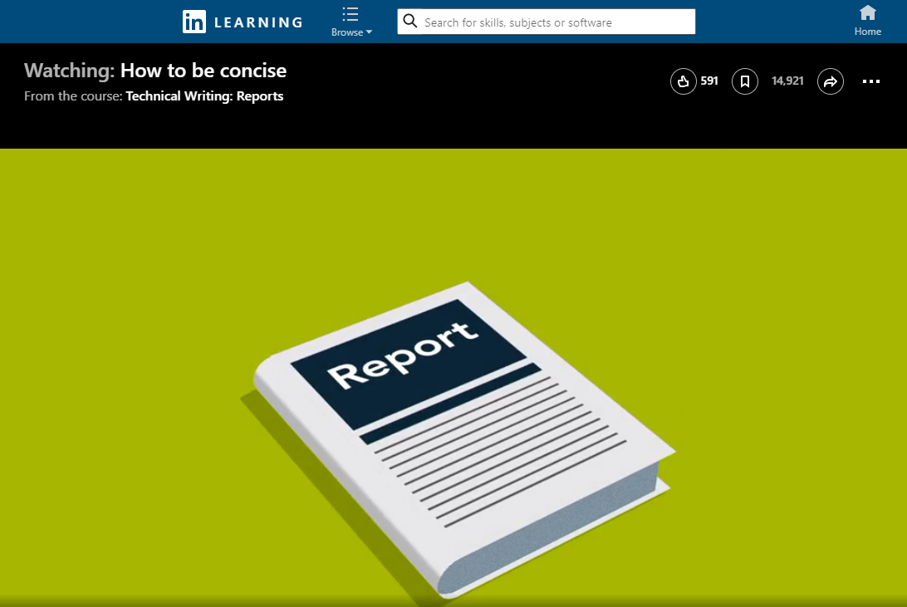

Ever imagine someone sitting at work and thinking to themselves, “Wow, I wish I had a longer report to read?” I bet you haven’t. Who wants to read long documents at work? That’s why using the most concise phrasing possible is the goal in technical writing. Every word must be powerful and on point.
Before applying the strategies below, review the information on concise writing in Chapter 10, “Writing Correct and Effective Sentences,” of Technical Communication, on pages 234–237.
Apply These Strategies to Your Project
- Watch the LinkedIn Learning video How to be concise for additional suggestions on how to eliminate wordiness and increase the effectiveness of phrasing. The video is free with your VT login. Follow these instructions to login.

- Apply that strategies from the video to your report:
- Avoid hyperbole (exaggeration). Focus on the facts. Check for words like very, extremely, and great.
- Avoid the overuse of the word this.
- Look for multi-word phrases that can be replaced with one or two words.
- Remove unneeded adverbs (words that describe verbs, adjectives, and other adverbs).
- Avoid using buzzwords and jargon.
- Cut out idioms and cliches.
- Be concise in your phrasing.
- Work through the 44 tips included in the infographic in the xxx and apply the advice to your document. As suggested in the video above, you can use the Find-and-Replace tool in your word processor to identify places where you use the phrases mentioned in the tips.